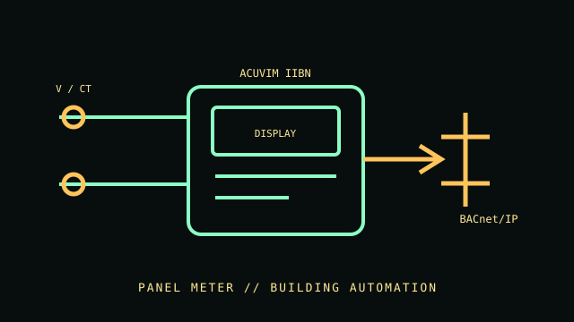

[ BACNET POWER METER // ACUVIM IIBN ]
Accuenergy Acuvim IIBN
Panel power and energy meter with BACnet/IP for building automation. The IIBN is a metering instrument; CT or sensor option, display package and communication configuration must be confirmed against the purchased unit.

VARIANT CONTROL: Metering current input depends on the selected CT/sensor and order configuration. Do not assume a bundled sensor or panel cutout without checking the order documents.
Specifications & compatibility
| Exact model / function | Accuenergy Acuvim IIBN BACnet Power and Energy Meter. |
|---|---|
| Measured metrics | More than 100 metering parameters are available across the family, including electrical quantities and power-quality data; enabled parameters depend on configuration. |
| Voltage / phase | Direct voltage measurement to 400 V line-to-neutral / 690 V line-to-line; compatible system and phase configuration must follow the manual. |
| Current range / accuracy | Current range depends on the ordered current input and selected CT/sensor. Manufacturer lists ANSI C12.20 Class 0.2 / IEC 62053-22 Class 0.2s energy accuracy for the IIBN; confirm the exact setup and metric. |
| Display / network / output | Panel digital display configuration; BACnet/IP and embedded web-server access. Confirm display option on the order code. |
| Form factor | Panel-mounted meter; exact mounting and enclosure configuration depend on ordered package. |
| Host compatibility | BACnet/IP-compatible building automation controller or monitoring host; no operating-system-specific desktop host is required. |
| Electrical safety | Use the correct current sensor and voltage wiring method from the Acuvim IIBN manual. Qualified personnel must isolate and verify circuits before installation; no safety protection is implied by meter accuracy or BACnet connectivity. |
Installation & archival notes
- Retain the exact order code, input/sensor option, BACnet instance/address and firmware with measurements.
- Use manufacturer-approved sensors and respect their separate voltage, current and safety categories.
- Do not open energized equipment; install in an appropriately rated panel.
Manufacturer sources
- Accuenergy — Acuvim IIBN product pageModel identity, BACnet features and product configuration information.
- Accuenergy — Acuvim IIBN datasheetMeasurement functions, voltage range and accuracy class.
- Accuenergy — product support documentsManufacturer manuals and configuration reference; use the IIBN revision corresponding to the installed unit.